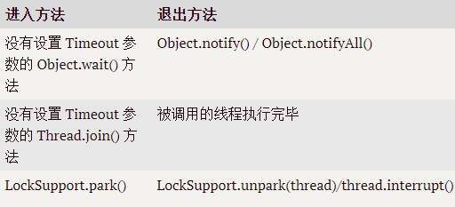
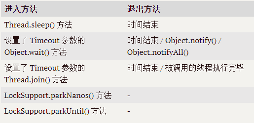

线程的实现
Thread类的所有关键方法都是声明为native的，也即Java线程的实现本质是使用平台的实现手段。
JDK1.2后，线程模型替换为基于操作系统原生线程模型来实现。
Java线程优先级
Java一共设置了10个级别的线程优先级，在两个线程同时处于Ready状态时，优先级高的线程更容易被系统选择执行。
Java的线程优先级是通过映射到系统的原生线程上实现的，因此线程调度最终取决于操作系统，并且操作系统的优先级并不能与Java的优先级一一对应。例如Solaris中有2^32种优先级，Windows只有7种。Windows平台的JDK中使用了除THREAD_PRIORITY_IDLE之外的其余6种线程优先级，对应关系如下表：
| Java线程优先级 | Window线程优先级 |
|---|---|
| 1（Thread.MIN_PRIORITY） | THREAD_PRIORITY_LOWEST |
| 2 | THREAD_PRIORITY_LOWEST |
| 3 | THREAD_PRIORITY_BELOW_NORMAL |
| 4 | THREAD_PRIORITY_BELOW_NORMAL |
| 5（Thread.NORM_PRIORITY） | THREAD_PRIORITY_NORMAL |
| 6 | THREAD_PRIORITY_ABOVE_NORMAL |
| 7 | THREAD_PRIORITY_ABOVE_NORMAL |
| 8 | THREAD_PRIORITY_HIGHEST |
| 9 | THREAD_PRIORITY_HIGHEST |
| 10（Thread.MAX_PRIORITY） | THREAD_PRIORITY_CRITICAL |
状态转换
Java线程状态转换图如下：

New：创建后尚未启动。
Runnable：包括了操作系统线程状态中的Ready和Runnning。
Waiting（无限期等待）：处于该状态的线程要等待被其他线程显式地唤醒。

Timed Waiting（限期等待）：无需等待其它线程显式地唤醒，在一定时间之后会被系统自动唤醒。

Blocked：等待获取一个排它锁。阻塞和等待的区别在于，阻塞是被动的，而等待线程是主动进入的。
使用线程
有以下三种使用线程的方法，其中实现 Runnable 和 Callable 接口的类只能当做一个可以在线程中运行的任务，因此最后还需要通过 Thread 来调用。可以理解为任务是通过线程驱动从而执行的。
继承Thread
1 | public class ThreadTest{ |
调用start()后该线程进入就绪态。
实现Runnable接口
1 | public class MyRunnable implements Runnable { |
实现Callable接口
1 | public class MyCallable implements Callable<Integer> { |
使用FutureTask任务有返回值。
实现接口与继承Thread选择？
最好选择接口。
- Java类不支持多继承，如果继承了Thread类就不能再继承其他类。而接口则可以多继承与多实现。
- 继承Thread，任务与线程代码没有分离，耦合度高，不符合软件工程“高内聚低耦合”的原则。
- 继承Thread整个类开销过大。
线程之间的协作
wait()/notify()/notifyAll()
以上三个方法均属于Object类而非Thread。
当一个线程调用一个共享变量的wait()方法时，该线程必须事先获取该共享变量的监视器锁，否则调用时会抛出IllegalMonitorStateException异常。调用wait()方法后，该线程会释放共享变量的监视器锁，然后挂起。以下事情可以唤醒该线程：
- 其他线程获取锁后执行任务完毕后，调用该共享变量的notify()或notifyAll()方法并且释放锁。如果有多个线程在等待，notify()会随机唤醒一个，而notifyAll()则唤醒所有，然后由这些线程来竞争监视器锁，这些线程会依次得到锁并释放锁。
- 其他线程调用该线程的interrupt()方法，该线程抛出InterruptedException异常返回。
一个线程获取共享变量的监视器锁有两种方式：
执行同步块代码，使用该共享变量作为参数：
1
synchronized(/*共享变量*/){}
调用该共享变量的同步方法：
1
synchronized void method(){}
注意，一个线程可以从挂起态变为运行态，即使其他线程没有唤醒或中断该线程或这该线程等待超时，即所谓虚假唤醒。可以通过循环来防止虚假唤醒：
1 | synchronized(obj){ |
以生产者消费者为例：
1 | //生产线程部分代码，异常在方法外处理 |
1 | //消费线程部分代码，异常在方法外处理 |
关于调用wait()后释放锁，如果该线程持有多个对象的锁，那么调用了谁的wait，就只释放它的锁，并不会释放其他共享对象的锁。
await()/signal()/signalAll()
J.U.C包中提供了 Condition 类来实现线程之间的协调，可以在 Condition 上调用 await() 方法使线程等待，其它线程调用 signal() 或 signalAll() 方法唤醒等待的线程。
join()
在线程A中调用线程B的join() 方法，线程A阻塞，直到线程B执行完毕。
interrupt()
通过调用一个线程的 interrupt() 来中断该线程，如果该线程处于阻塞、限期等待或者无限期等待状态，那么就会抛出 InterruptedException，从而提前结束该线程。但是不能中断 I/O 阻塞和 synchronized 锁阻塞。
线程中断
interrupt()
线程A运行时，线程B可以调用A的interrupt()方法来设置A的中断标志为true并立即返回。此时线程A实际并没有被中断，它会继续往下执行。但是如果A因为调用了wait()系列方法、join()方法、或者sleep()方法而被挂起，此时B若调用A的interrupt()方法，A会在调用这些方法的地方抛出InterruptedException异常而返回。
interrupted()/isInterrupted()
如果一个线程的 run() 方法执行一个无限循环，并且没有执行 sleep() 等会抛出 InterruptedException 的操作，那么调用线程的 interrupt() 方法就无法使线程提前结束。
但是调用 interrupt() 方法会设置线程的中断标记，此时调用 interrupted() 方法会返回 true。因此可以在循环体中使用 interrupted() 方法来判断线程是否处于中断状态，从而提前结束线程。
1 | public class InterruptExample { |
查看interrupted源码，发现其返回的是当前线程的中断标志，并且返回后将中断标志重置为false。这里需要注意的是假如在main方法中有这样一句: threadA.interrupted()，此时返回的不是threadA的中断标志而是主线程（main方法所在线程）的。而上述代码while循环中则返回的是MyThread的中断标志。
1 | public static boolean interrupted() { |
而要获取某个具体线程对象的中断标志，则应该用isInterrupted()方法。
Thread其他常见方法
join()
项目中经常会遇到“等待其他几个线程执行完毕后才能继续往下执行”的场景，比如多个线程加载资源，需要等待多个线程全部加载完毕再汇总处理。Thread的join()则可以满足该场景的需求。
join()的作用：在线程A中调用线程B的join() 方法，线程A进入waiting状态，直到线程B执行完毕。
sleep()
sleep(long millis)是Thread类的static native方法，单位是毫秒。调用Thread.sleep(1000)并不会释放锁，进入timed waiting状态，1000毫秒过后该线程自动唤醒进入就绪态等待CPU调度。
yield()
Thread类的静态方法。当一个线程调用yield方法时，实际就是在暗示线程调度器当前线程请求让出自己的CPU使用，但是线程调度器可以无条件忽略该暗示。
如果当前线程成功让出CPU使用权，会进入就绪态，甚至可能发生刚让出CPU使用权就又被调度到运行态的情况。
该方法可用于调试或测试时复现并发竞争条件导致的问题。
setDaemon(Boolean boolean)
Java中线程分为daemon（守护）线程和user线程两类，其中守护线程是程序运行时在后台提供服务的线程，不属于程序中不可或缺的部分，比如垃圾回收线程就是守护线程，而main方法所在的线程则是主线程。
当所有用户线程结束时，程序也就终止，同时会杀死所有守护线程。
通过在线程调用start()之前myThread.setDaemon(true);来设置该线程为守护线程。
总结：如果希望主线程结束后JVM进程马上结束，就将子线程设置为守护线程。
面试：wait()与sleep()区别？
- wait()是Object的方法，sleep()是Thread的方法。
- wait()会释放锁，sleep()不会。
线程死锁
死锁产生必备四条件
- 互斥： 线程获取到的资源只能自己使用，其他请求该资源的线程只能等待。
- 请求并持有：线程请求被其他线程占有资源的同时，并不释放已经持有的资源。
- 不可剥夺：线程获取到的资源只能由线程使用完后自己释放。
- 环路：线程-资源形成闭环。
避免死锁
只要破坏死锁产生必备的四个条件之一就可以避免死锁，但是目前只能通过避免形成环路来完成，也即可以使用资源申请的有序性原则。
synchronized关键字
同步代码块：
1
2
3
4
5
6
7
8
9
10
11
12
13
14
15public class A{
static Object obj = new Object();
public void func(){
synchronized(obj){}//锁对象是obj
}
public void func(){
synchronized(this){}//锁对象是A的实例对象
}
public void func(){
synchronized(A.class){}//锁对象是类Class对象
}
}同步方法：锁对象是实例对象。
1
public synchronized void func(){}
静态同步方法：锁对象是类Class对象
1
public static synchronized void func(){}
volatile关键字
volatile虽然保证了可见性和有序性，但是并不保证原子性，通过Java内存模型与Java规范的内存间交互操作我们知道，volatile关键字不满足原子性的原因就是，虽然其通过{assign->store->write}和{read->load->use}满足了可见性，但是只要{read->load->use->assign->store->write}不是原子的，那么一个线程对一个变量的操作就不是原子的。比如多线程计时器程序：
1 | public class Test { |
使用volatile修饰count，显然在一个线程对一个变量进行{assign->store->write}和{read->load->use}操作的时候，其他线程也可以进行这两个操作，这就导致了count的值最终一定会小于60000。而如果对内部for循环加synchronized块，那么它可以通过lock和unlock操作保证同步块中变量的修改一定满足{read->load->use->assign->store->write}不被其他线程打断。
volatile的使用场景
使用条件：写入变量值不依赖当前值时。因为如果依赖当前值，则必须保证{read->load->use->assign->store->write}满足原子性。
常见场景：
状态标志
一次性安全发布(one-time safe publication)
独立观察(independent observation)
volatile bean
开销较低的读-写锁策略
双重检查(double-checked)
参考列表：
《Java并发编程之美》
https://www.pdai.tech/md/java/thread/java-thread-x-thread-basic.html
https://cyc2018.github.io/CS-Notes/#/notes/Java%20%E5%B9%B6%E5%8F%91